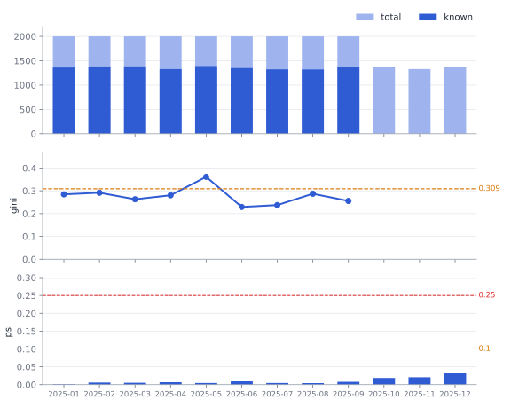

Model monitoring#
A model in use is checked every month or quarter: does it still see the population that it was developed on, and does it still rank the outcomes as it did? monitoring_table() answers both questions for a score in one table, with one row per period: the number of observations, the events among the known outcomes, the AUC, Gini and KS, and the PSI of the score against a reference sample. stability_table() gives the PSI of every variable of the model in every period, to find the variables behind a shift.
Monitoring repeats the measures of Model performance and of the population stability index period by period, once the model is in production with its binning specification. Model validation then reviews the model once a year, as supervisors ask of internal rating models, and Vintage and roll-rate analysis follows the loans that the model approves.
Definitions#
Each row of the table describes the observations of one period, such as the applications of a month. The outcome of an observation is known once its outcome window has ended, such as twelve months after the loan was granted, and only if a loan was granted at all. The event rate of period \(t\) is that of its known outcomes,
and the AUC, Gini and KS are those of Model performance, computed on the known outcomes of the period alone. The stability of the score is the PSI over score bands whose edges are fitted once on the reference scores, so that every period is compared on the same bands. With \(q_i\) the share of the reference scores in band \(i\) and \(p_{t,i}\) that of the scores of period \(t\), both smoothed as in Population stability index,
The reference is either one of the periods, often the first after development, passed as reference_period, or a separate sample, usually the development sample itself, passed as reference_score. The PSI does not use the outcomes, so it is available as soon as the scores of a period are. As in Model performance, the score rises with the risk: pass a PD as it is and negate scorecard points.
A worked example#
Three months of four scores each, where two outcomes of March are not known yet. With bins=2, the median of the January scores, 0.25, splits the scores into two bands:
>>> import numpy as np
>>> from kivi.monitoring import monitoring_table
>>> score = [0.1, 0.2, 0.3, 0.4, 0.2, 0.3, 0.6, 0.7, 0.5, 0.6, 0.8, 0.9]
>>> target = [0, 0, 1, 1, 0, 1, 0, 1, 0, np.nan, 1, np.nan]
>>> period = ["2024-01"] * 4 + ["2024-02"] * 4 + ["2024-03"] * 4
>>> table = monitoring_table(score, period, target, reference_period="2024-01", bins=2)
>>> table[["total", "known", "event", "event_rate"]]
total known event event_rate
period
2024-01 4 4 2 0.5
2024-02 4 4 2 0.5
2024-03 4 2 1 0.5
>>> table[["auc", "gini", "ks", "psi"]].round(4)
auc gini ks psi
period
2024-01 1.00 1.0 1.0 0.0000
2024-02 0.75 0.5 0.5 0.2747
2024-03 1.00 1.0 1.0 0.8087
January has two scores in each band, February one and three, and March none and four. The PSI of February is \((0.25 - 0.5) \ln 0.5 + (0.75 - 0.5) \ln 1.5 = 0.2747\). The empty band of March is smoothed to 0.5, which gives the shares 0.5/4.5 and 4/4.5 and a PSI of 0.8087. In February, the events 0.3 and 0.7 score higher than the non-events 0.2 and 0.6 in three of the four pairs, so the AUC is 0.75. The two known outcomes of March, a non-event at 0.5 and an event at 0.8, are ranked correctly.

The worked example. The median of the January scores splits every month into the same two bands, and each month becomes one row of the table.#
A monitoring report#
The examples on this page use the synthetic applications of make_applications(), scored by an incumbent scorecard whose PD is incumbent_pd; see Example data. One sample of 10,000 applications is the development sample, and a second one stands for the 24,000 applications of 2025, 2,000 a month. From October, a marketing campaign aimed at permanent employees ends, and half of them no longer apply, which changes the mix of applicants; the example leaves out half of the permanent employees of the last quarter:
>>> import pandas as pd
>>> from kivi.datasets import make_applications
>>> development = make_applications(n_applicants=10000, rng=0)
>>> applications = make_applications(n_applicants=24000, rng=1)
>>> months = pd.period_range("2025-01", periods=12, freq="M")
>>> applications["month"] = months[np.arange(24000) * 12 // 24000]
>>> rng = np.random.default_rng(2)
>>> permanent = applications["employment"] == "permanent"
>>> left_out = (applications["month"] >= months[9]) & permanent & (rng.random(24000) < 0.5)
>>> applications = applications[~left_out]
The outcome of an application is known only if it was approved, and only once its outcome window has ended. At the end of the year, the applications up to September have outcomes and those of the last quarter do not. Unknown outcomes are passed as missing values:
>>> known = applications["approved"] & (applications["month"] <= months[8])
>>> outcome = applications["target"].where(known)
>>> report = monitoring_table(
... applications["incumbent_pd"],
... applications["month"],
... outcome,
... reference_score=development["incumbent_pd"],
... )
>>> report.round(3)
total known event event_rate auc gini ks psi
period
2025-01 2000 1361 131 0.096 0.642 0.284 0.227 0.002
2025-02 2000 1383 142 0.103 0.646 0.292 0.226 0.006
2025-03 2000 1384 140 0.101 0.631 0.263 0.227 0.005
2025-04 2000 1328 132 0.099 0.640 0.280 0.245 0.007
2025-05 2000 1391 132 0.095 0.681 0.361 0.312 0.005
2025-06 2000 1350 139 0.103 0.615 0.229 0.219 0.011
2025-07 2000 1323 127 0.096 0.619 0.238 0.190 0.005
2025-08 2000 1321 112 0.085 0.644 0.287 0.256 0.004
2025-09 2000 1367 158 0.116 0.628 0.256 0.205 0.008
2025-10 1371 0 0 NaN NaN NaN NaN 0.019
2025-11 1329 0 0 NaN NaN NaN NaN 0.021
2025-12 1370 0 0 NaN NaN NaN NaN 0.032
The ten score bands are the deciles of the development scores, as bin_edges() fits them, so the PSI of each month compares its scores with the development scores on the same bands.
The volume falls in the last quarter, when fewer permanent employees apply. The event rate stays close to the 9.7% of the approved applications of the development sample, and the Gini coefficient scatters around their value of 0.31:
>>> from kivi.metrics import gini
>>> approved = development[development["approved"]]
>>> round(gini(approved["incumbent_pd"], approved["target"]), 3)
0.309

The monitoring report by month. Top: the applications and those with a known outcome; the last quarter has none yet. Middle: the Gini coefficient of each month against the 0.309 of the approved development applications. Bottom: the PSI against the development scores, far below the 0.1 and 0.25 thresholds also in the last quarter.#
With about 130 events a month, the Gini coefficient of a single month moves by several points from sampling noise alone, so read a trend over several months rather than one low value. The last quarter has no known outcomes, and its discrimination is NaN.
The PSI stays at about 0.01 or below up to September and rises to about 0.02 to 0.03 in the last quarter: still a small shift by the usual thresholds. The mix of applicants has changed, but employment is only one input of the score, so the score moves less than the population. The variable report below shows which variables moved.
The reference can also be a period, such as the first month of the year. Its PSI is then 0, and the other months are compared with it:
>>> by_month = monitoring_table(
... applications["incumbent_pd"], applications["month"], outcome, reference_period="2025-01"
... )
>>> by_month["psi"].round(3).tail(4)
period
2025-09 0.009
2025-10 0.020
2025-11 0.017
2025-12 0.028
Freq: M, Name: psi, dtype: float64
Reading the result#
Column |
Meaning |
|---|---|
|
Observations in the period, including those whose outcome is not known yet. |
|
Observations with a known outcome, and the events among them. |
|
|
|
The discrimination of the score on the known outcomes of the period, NaN unless both classes are present. |
|
The PSI of the scores of the period against the reference scores, on bands fitted on the reference. |
Read each column against the development sample rather than against a fixed number. The discrimination is measured on the approved applications only, whose scores the cut-off has truncated, so it is lower than on all applicants: compare it with the development value of the approved applications, as above. A falling Gini over several months means that the score ranks the new outcomes less well than it did.
The PSI of the score follows the conventions of Population stability index: below 0.1 a small shift, from 0.1 to 0.25 a moderate one and above 0.25 a large one. A shift of the score asks which variables moved and whether the event rate moves with them. In a small period the PSI and the discrimination mostly reflect sampling noise, so read them together with total and known, and set a minimum size before a value raises an alert.
The two functions of this page keep every category of a categorical period as a row, also one without observations, whose counts are 0 and whose other columns are NaN, so that the monthly reports of different samples line up even when a month has no applications. vintage_table() and calibration_table() leave such categories out, so join their tables to these by period label rather than by position. Periods that are not categorical are the distinct values that occur, sorted.
Variable stability#
stability_table() takes the grouped variables of every period and gives the PSI of each against the groups of the reference sample. Group both samples with the binning specification fitted on the development sample, as in Binning specifications. inquiries gets explicit edges because 0 is the most common value:
>>> from kivi.monitoring import stability_table
>>> from kivi.spec import fit_spec
>>> features = ["age", "income", "debt_to_income", "inquiries", "housing", "employment"]
>>> spec = fit_spec(
... development[features],
... development["target"],
... bins={"inquiries": [-np.inf, 0, 1, 2, np.inf]},
... )
>>> stability = stability_table(
... spec.cut(applications[features]),
... applications["month"],
... reference_groups=spec.cut(development[features]),
... )
>>> stability.round(3)
variable age income debt_to_income inquiries housing employment
period
2025-01 0.001 0.002 0.006 0.006 0.000 0.002
2025-02 0.001 0.002 0.003 0.000 0.001 0.001
2025-03 0.001 0.002 0.004 0.000 0.000 0.001
2025-04 0.001 0.001 0.000 0.004 0.000 0.000
2025-05 0.000 0.002 0.001 0.001 0.001 0.000
2025-06 0.002 0.003 0.001 0.003 0.000 0.000
2025-07 0.001 0.002 0.001 0.003 0.001 0.004
2025-08 0.002 0.000 0.002 0.002 0.000 0.003
2025-09 0.001 0.004 0.003 0.002 0.000 0.003
2025-10 0.001 0.001 0.007 0.001 0.003 0.110
2025-11 0.010 0.004 0.003 0.001 0.000 0.131
2025-12 0.004 0.004 0.005 0.002 0.001 0.104

PSI of each variable of the model in each month, coloured by the 0.1 and 0.25 thresholds. Only employment crosses 0.1, from October, when half of the permanent employees no longer apply.#
Every variable stays below 0.01 up to September. From October, employment rises above 0.1, a moderate shift, while the other variables do not move: the report points at the change of mix before any outcomes of the new applicants are known. Each entry is the PSI of psi_table() for the month alone, which shows the groups that moved:
>>> from kivi.stability import psi_table
>>> october = applications["month"] == months[9]
>>> psi_table(development["employment"], applications.loc[october, "employment"])[
... ["reference_share", "current_share", "psi"]
... ].round(3)
reference_share current_share psi
bin
permanent 0.655 0.492 0.047
temporary 0.197 0.287 0.034
self_employed 0.148 0.221 0.030
The share of permanent employees has fallen from 65% to 49%. Whether the new mix defaults as the score expects shows only when its outcomes are known; follow the event rate of the last quarter closely as they arrive.
Missing values#
A missing target is an outcome that is not known yet. Most functions raise an error for a missing label, as Conventions describes;
monitoring_table()reads it as an unknown outcome, asswap_set()does. It counts intotalbut not inknown,event,event_rateor the discrimination, so pass the outcomes that are not yet observed as missing values rather than as 0. A period without both classes among its known outcomes, such as the last quarter above, gets NaN discrimination instead of an error.A missing score or a missing period raises an error: a missing score has no band and no rank, and an observation without a period has no row.
In
stability_table(), a missing value is a group of its own, as inpsi_table(), and groups observed in only one of the two samples are included.
Sample weights#
Both functions take weights, one non-negative weight per observation, and reference_weights for a reference sample passed as reference_score or reference_groups; a reference period takes its weights from weights. Counts become sums of weights, as Conventions describes for every function, and the discrimination and the PSI are weighted. On the same band edges, integer weights give the same table as repeating rows. An integer bins fits the edges by weighted quantiles, as bin_edges() does, so its edges can differ from those of the repeated rows.
Monitoring samples often keep every event but only some of the non-events. Below, every application with an event or an unknown outcome is kept, but only a quarter of the known non-events, which get a weight of 4:
>>> sampled = (outcome != 0) | (rng.random(len(applications)) < 0.25)
>>> weights = np.where(outcome[sampled] == 0, 4.0, 1.0)
>>> sample = applications[sampled]
>>> def event_rates(**options):
... table = monitoring_table(
... sample["incumbent_pd"],
... sample["month"],
... outcome[sampled],
... reference_score=development["incumbent_pd"],
... **options,
... )
... return table["event_rate"]
>>> pd.DataFrame({
... "all": report["event_rate"],
... "sample": event_rates(),
... "weighted": event_rates(weights=weights),
... }).head(3).round(3)
all sample weighted
period
2025-01 0.096 0.289 0.092
2025-02 0.103 0.315 0.103
2025-03 0.101 0.295 0.095
The sample overstates the event rate threefold, and the weights restore it to that of all applications, up to sampling noise.
Limits#
The PSI shows that the scores have moved, not whether the score still ranks or predicts the outcomes. The outcomes arrive only after the outcome window, so the discrimination of the latest periods is missing or rests on few outcomes.
The table has no confidence intervals or tests. Judge a change of the Gini coefficient or the PSI against the size of the period, or compare periods of similar size.
The table does not check calibration. Pass the period as the groups of
calibration_table(), with the rows whose outcomes are known, to compare the predicted and observed default rates of each period.The change of the average score that each variable causes is its CSI, from
csi_table(), computed for one period at a time.
Errors and warnings#
An integer bins fits quantile edges on the reference scores. When many reference scores are tied, as for a score rounded to one decimal, the edges coincide and fewer bands remain. A UserWarning says so, and every period is compared on the bands that remain:
>>> import warnings
>>> with warnings.catch_warnings(record=True) as caught:
... warnings.simplefilter("always")
... rounded = monitoring_table(
... applications["incumbent_pd"].round(1),
... applications["month"],
... outcome,
... reference_score=development["incumbent_pd"].round(1),
... )
>>> print(caught[0].message)
tied edges leave 3 of the 10 requested bins; the value 0.1 makes up 56% of the fitted values, pass fewer bins or explicit edges
Pass fewer bins or explicit edges, such as those of the development report, to remove the warning. Explicit edges must cover every score, so use infinite outer edges; a score outside them raises an error.
The reference is reference_period or reference_score, or reference_groups for stability_table(); passing neither or both raises an error. A reference_period that is not one of the periods raises an error that lists the first periods:
>>> monitoring_table(
... applications["incumbent_pd"], applications["month"], outcome, reference_period="2024-12"
... )
Traceback (most recent call last):
...
ValueError: reference_period must be one of the periods Period('2025-01', 'M'), Period('2025-02', 'M'), Period('2025-03', 'M'), ..., got '2024-12'
A list of labels is not a period label, and a boolean mask of the reference rows is not a sample of scores, so both raise an error too. Pass the scores of the reference rows, such as score[mask], as reference_score.